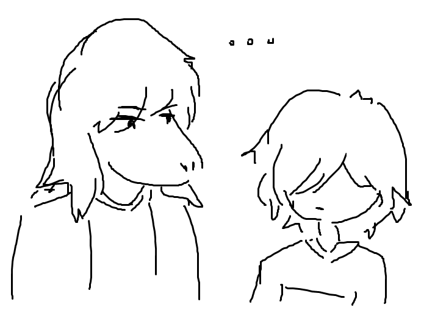
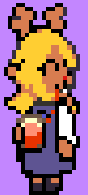
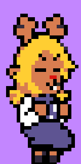
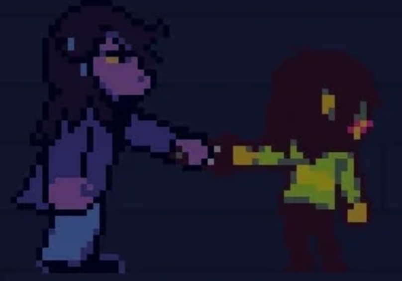
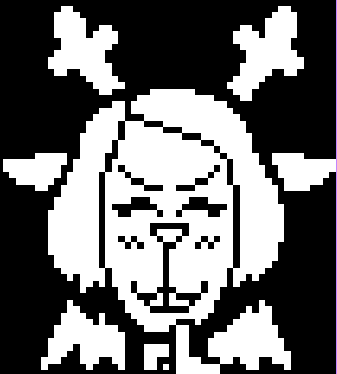

my deltarune backstory (EMOTIONAL)
one day i'll write the full backstory but for now you'll get the summary version:
In 2019 i discovered deltarune, i already knew about undertale cause it was inescapable online but i never cared for it. However, i ended up watching playthroughs of the game (all routes and secrets) because i heard you needed it to understand deltarune better. That year, i became obsessed with undertale instead, and have fond memories of listening to the OST on repeat. But still, my experience with that game only exists because of my initial interest in deltarune.
When i finally watched a playthrough of chapter 1, i thought the characters were way more engaging and funny. Susie & lancer were my favorites. I even remember watching a few theory videos, although the theorizing scene didn't exist yet like it does nowadays. Back then, deltarune was just a fun game that i found during summer break.
Then came 2021 and i heard about the release of chapter 2, i liked it as much as everyone else but i wasn't really in the fandom yet, i actually missed the sweepstakes 💔. It was 2023, when i officially became a Deltarune Fan, and it was all thanks to the cool theorists on youtube. My favorite characters back then were... none? i honestly just liked everyone from that chapter, although one year later i got into the shipping side of the fandom and discovered the world of krusie.

"susikris" (2023) - my first deltarune fanart.
All that time, i could only wait impatiently for the new chapters. The more time passed the more my obsession grew, until deltarune was the only thing i could think about. I experienced all the Deltarune Tomorrow hype, the newsletter updates, toby's tweets, the new sweepstakes, the directspiracy and finally the trailer release. It was so special tbh, i will always remember chapter 2 era fondly. Oh yeah i forgor to mention, at some point i became super interested in kris & noelle and the weird route. Currently, theyre my favorite characters #Snowgrave.
So yeah, deltajune happened and of course i played the chapters on the day of release, nonstop like a crazy person. I was going insane with chapter 3 specifically since i was trying really hard to get all the secrets. After the new chapters came out, ive thinking about this game basically all the time, and with chapter 5 on the horizon, i expect my obsession to grow even more. I dont just like deltarune, its like part of My Life now.
ok now lets move on to something else...
my favorites!
CHARACTER: noelle and kris.
SECRET BOSS: shadow mantle holder, the best secret boss so mysterious and cool and evil.
CHAPTER BOSS: queen. very entertaining and funny.
CHAPTER: chapter 2, still the best one for me. ch3 is growing on me tho.
SOUNDTRACK:
-
rude buster (OFCOURSE), field of hopes and dreams, scarlet forest, hip shop, chaos king, darkness falls, the world revolving, before the story.
-
my castle town, queen, smart race, faint courage, pandora palace, acid tunnel of love, attack of the killer queen, big shot.
-
ruder buster (OF COURSE), paradise paradise, tv world, its tv time!, sword, air waves.
-
dark sanctuary, from now on, hammer of justice, the second sanctuary, the third sanctuary (#PEAK), neverending night.
QUOTE:
There! That's what I wanted to see! Flickering red, like pretty little flames...
Your eyes can't hide it, Kris. Without play...
The knife grows dull.
SPRITE:






thats all i can think of for now.